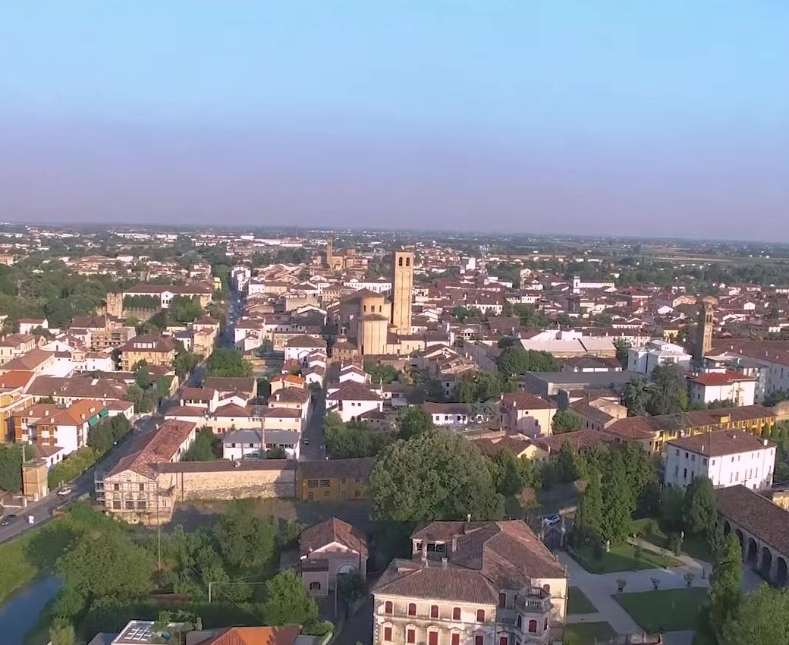
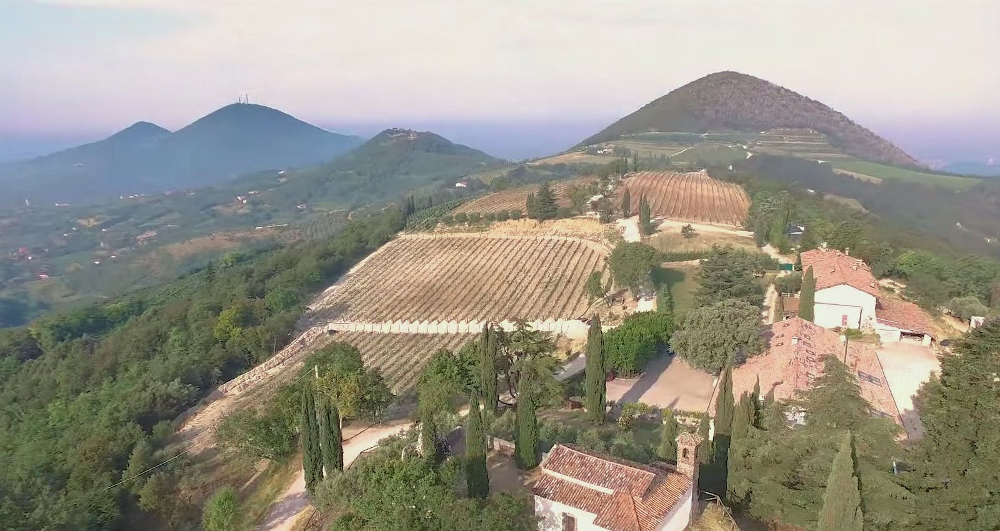
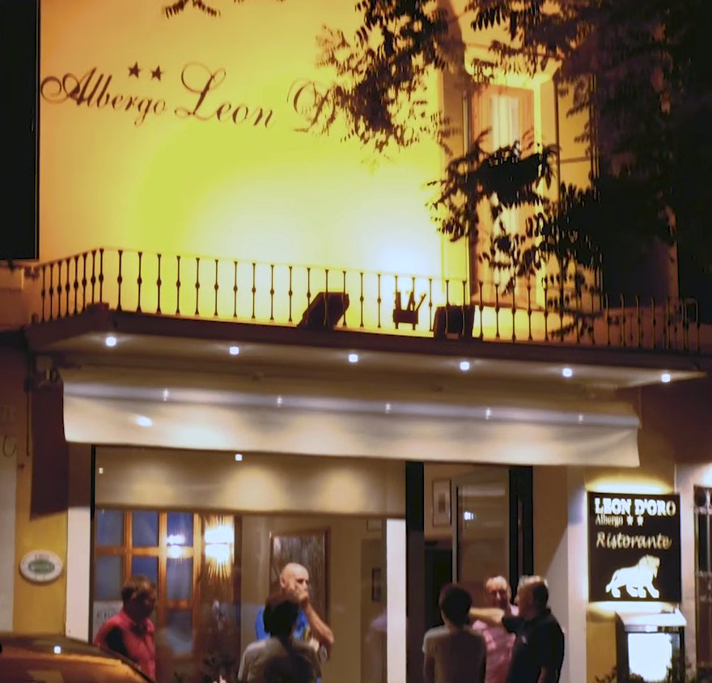

Viale
Fiume 20
Este vista dall’alto, con i tetti del centro, il campanile e il verde delle mura

Este vista dall’alto, con i tetti del centro, il campanile e il verde delle mura
Siamo a Este, a due passi dal centro e dal Castello Carrarese, ai piedi dei Colli Euganei, poco lontano dalle terme di Abano e Montegrotto, in provincia di Padova.
Accanto all’albergo c’è il parcheggio pubblico. Dalla stazione delle corriere di Este parte la navetta per l’ospedale di Schiavonia.
Viale Fiume 20, 35042 Este (PD)

Este è una città murata, nata con i Paleoveneti, colonia romana, poi degli Estensi, dei Carraresi e di Venezia. In città ci sono il Castello Carrarese, il Museo Nazionale Atestino, il Duomo di Santa Tecla con la pala di Giambattista Tiepolo, la chiesa di San Martino e il santuario della Madonna delle Grazie.
All’ufficio turistico IAT trovate altre informazioni sui luoghi e sui prodotti del territorio, come la Ceramica Estense; gli opuscoli ve li diamo noi, al banco.
I Colli Euganei sono colline di origine vulcanica, parco regionale dal 1989: vini, olio, sentieri a piedi e in bici. Da vedere Arquà Petrarca, il Monte Gemola con Villa Beatrice, il Buso della Casara a Valnogaredo, la Fonte Regina a Torreglia e la cascata Schivanoia a Teolo; quali cantine e frantoi visitare ve lo diciamo noi.
In auto, da Este si va in giornata a Padova, Vicenza, Verona, Venezia, Chioggia, Rovigo, Ferrara e Mantova.
L’insegna nera col leone è accanto alla porta, sotto la scritta Albergo Leon d’Oro dipinta sul muro giallo.
Viale Fiume 20, 35042 Este (PD). Il ristorante è chiuso la domenica.

Albergo Ristorante Leon d’Oro S.n.c. di Rubini Rodolfo & C.
Viale Fiume 20, 35042 Este (PD)
Ristorante chiuso la domenica
Telefono 0429 602949
Fax 0429 3072
prenotazioni@leondoroeste.it
P.IVA e C.F. 04185510288
REA PD-369167
CIN IT028037A1GWJ7NDDS